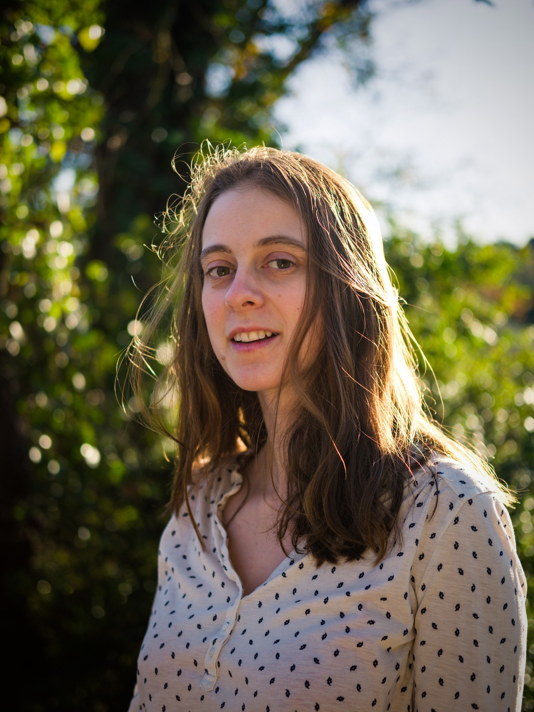

Vanille Debray
Film Composer | Singer-songwriter

Vanille Debray is a film-music composer and songwriter based in Montreal, Canada. She writes delicate and hearfelt orchestral soundtracks, rhythmic and ambient electronic tracks, and produces indie-folk songs.
She recently scored her first feature film, Masterpiece, which premiered at KCFF in February 2025 and won Best First Feature at the Montreal Independent Film Festival.
A classically-trained pianist, multi-instrumentist and vocalist, she also works as an arranger, and has produced arrangements for Royal Caribbean Cruises bands.
Vanille has written and produced 2 EPs of songs and singles in acoustic and electronic folk and dream-pop styles.
She is active as a performer and composer for short and feature films, many of which are winning awards in international film festivals.
She recently scored her first feature film, Masterpiece, which premiered at KCFF in February 2025 and won Best First Feature at the Montreal Independent Film Festival.
A classically-trained pianist, multi-instrumentist and vocalist, she also works as an arranger, and has produced arrangements for Royal Caribbean Cruises bands.
Vanille has written and produced 2 EPs of songs and singles in acoustic and electronic folk and dream-pop styles.
She is active as a performer and composer for short and feature films, many of which are winning awards in international film festivals.
FILMOGRAPHY
・ GET UP, DAVID, GET UP (Allen Forouhar) 2025
・ MASTERPIECE (Evan Bard) 2025
・ BUNKER (Abyssal Productions, Colin Javaux) 2025
・ FIX (Patrick Lemay) 2025
・ MAS DE MOUSQUETY (Done My Life) 2025
・ REUNION (Ellen Yuan Ahn) 2024
・ BACK TO NORMAL (Shimaro Entertainment, Sam Bhat) 2024
・ DANGEROUS RUMOURS (Craig Lobo) 2024
・ HOTEL CAP ESTEL 2024
・ RAINBOW (Johnny Cortes) 2024
・ GREY MAGIC (Chloe Emond-Lane) 2024
・ VILLA FANTAISIE (Titouan Debray) 2023
・ LA BASTIDE DE LAURENCE (Titouan Debray) 2022
・ FIRECRACKER (Calder Levine) 2023
・ RUPTURE (Marianne Lavergne) 2022
・ A DEUX (Juliette Bérubé) 2022
・ YONDER: BACKCOUNTRY DRIVE (Titouan Debray) 2020
・ YONDER: LE SUD (Titouan Debray) 2021
・ MASTERPIECE (Evan Bard) 2025
・ BUNKER (Abyssal Productions, Colin Javaux) 2025
・ FIX (Patrick Lemay) 2025
・ MAS DE MOUSQUETY (Done My Life) 2025
・ REUNION (Ellen Yuan Ahn) 2024
・ BACK TO NORMAL (Shimaro Entertainment, Sam Bhat) 2024
・ DANGEROUS RUMOURS (Craig Lobo) 2024
・ HOTEL CAP ESTEL 2024
・ RAINBOW (Johnny Cortes) 2024
・ GREY MAGIC (Chloe Emond-Lane) 2024
・ VILLA FANTAISIE (Titouan Debray) 2023
・ LA BASTIDE DE LAURENCE (Titouan Debray) 2022
・ FIRECRACKER (Calder Levine) 2023
・ RUPTURE (Marianne Lavergne) 2022
・ A DEUX (Juliette Bérubé) 2022
・ YONDER: BACKCOUNTRY DRIVE (Titouan Debray) 2020
・ YONDER: LE SUD (Titouan Debray) 2021
Awards & Nominations
MONTREAL INDEPENDENT FILM FESTIVAL 2025
Nominated for Best Composer of the Season - Masterpiece.
LOS ANGELES INTERNATIONAL SHORT FILM FESTIVAL 2025
Nominated for Best Original Score - Back to Normal.
Education
MUSIC & CINEMA MARSEILLE INT. FILM FESTIVAL
・ Lab on Mars film scoring program - 2024
・ 10 day scoring masterclass with composer Rémi Boubal - 2023
・ Third character film scoring program - 2022
STATION CLIP, MONTREAL
・ Ableton for live production training - 2023
・ Diversity and equity in audio production - 2023
McGILL UNIVERSITY, MONTREAL
・ Qualifying year in Sound Recording - 2017-2018
with Prof. George Massenburg
with Prof. George Massenburg
・ Bachelor of Music - 2014-2018